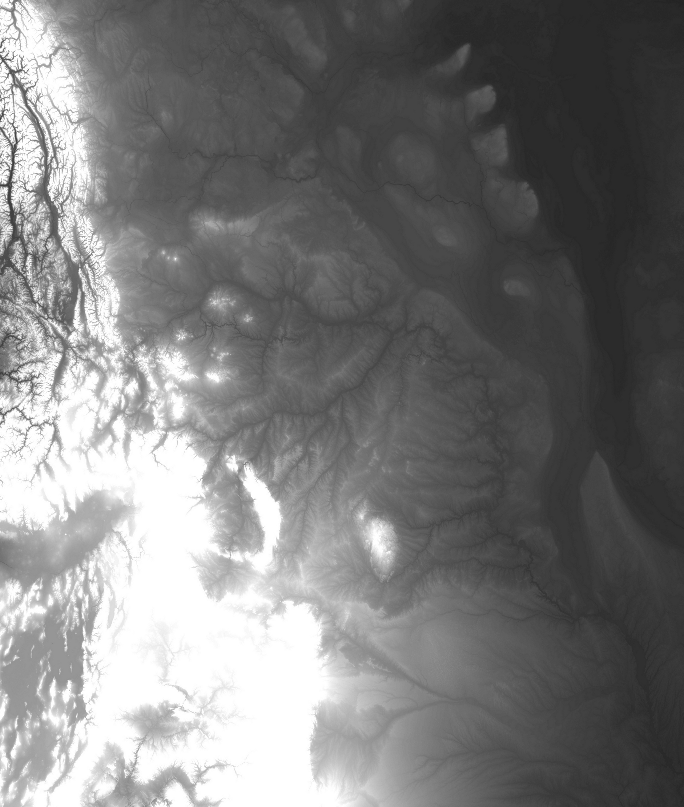

Some days, when you’re working with spatial analytical software, looking for a way to shoehorn techniques used to study bighorn sheep into studying the historic gravities of power, you forget that you’re dealing with some of the most beautiful imagery to have graced the retina. There’s something about radar topography and electron microscopy that reveal shapes and patterns both foreign and familiar. Here’s Canada and the northern United States, round about the Rockies.


North America - 250m Resolution - Albers Equal Area Contiguous
This entry was posted on Monday, April 5th, 2010 at 4:31 PM and is filed under Art, Epiphenomena. You can follow any responses to this entry through the RSS 2.0 feed. Both comments and pings are currently closed.